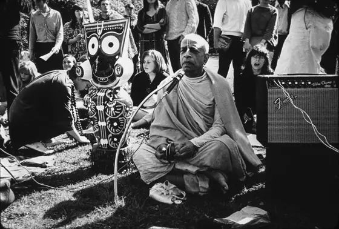

Founder-Ācārya and Preeminent Śikṣā-Guru of the International Society for Krishna Consciousness
Read the Founder-Ācārya documentHear and watch
Nectar Drop
Short, focused audio excerpts of less than 90 seconds, drawn directly from Śrīla Prabhupāda's recorded lectures, conversations, and morning walks.
Lecture in Hamburg, 5 September 1969